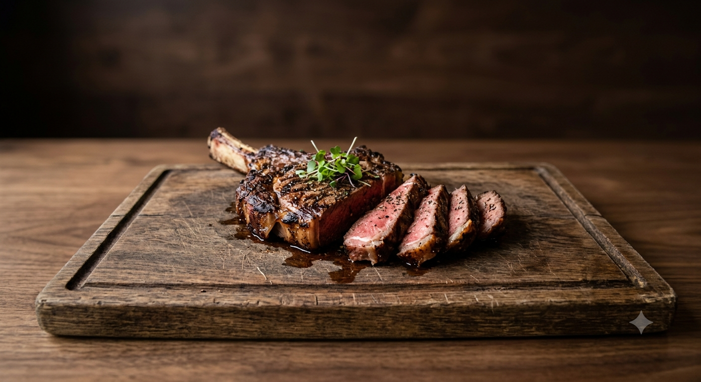

Home page
Flatiron steak

Description
This delicious flat iron steak was created from a combination of different recipes that I read. I combined, adjusted, and finally perfected the marinade and cooking time to my taste. I'm sure you will love it as well. After all, it is perfection! Skip the steakhouse and make restaurant-worthy steak at home. It's easier than you think to recreate it in your own kitchen! Trust us, you're going to want to bookmark this irresistible flat iron steak recipe — you'll come back to it again and again! Flat iron steak is cut from beef shoulder. To make a flat iron steak, butchers remove the connective tissue to separate the top shoulder blade into two cuts: One is the top blade, the other is the flat iron. Flat iron steak is nicely marbled and is less expensive than other steaks, which makes it a popular choice among home cooks. When it's cooked correctly, flat iron steak is wonderfully tender and juicy.
Ingredients
- 1(2lb) flat iron steak
- 2 1/2 tablespoon olive oil
- 2 cloves garlic, minced
- 1 teaspoon chopped fresh parsley
- 1/2 teaspoon chopped fresh chives
- 1/4 teaspoon chopped fresh rosemary
- 1/4 cup Cabernet sauvignon
- 1/2 teaspoon salt
- 3/4 teaspoon ground black pepper
- 1/4 teaspoon dry mustard powder
Steps
- Place steak inside a large resealable bag. Stir olive oil, garlic, parsley, rosemary, chives, red wine, salt, pepper, and mustard powder together in a small bowl.
- Pour marinade over steak in the bag. Press out as much air as you can and seal the bag. Marinate in the refrigerator for 2 to 3 hours.
- Heat a nonstick skillet over medium-high heat. Place steak in the hot skillet and discard any remaining marinade; sear and cook steak for 3 to 4 minutes on each side for medium rare, or to your desired degree of doneness. An instant-read thermometer inserted into the center should read 130 degrees F (54 degrees C) for medium rare.
- Allow steak to rest for about 5 minutes before serving.